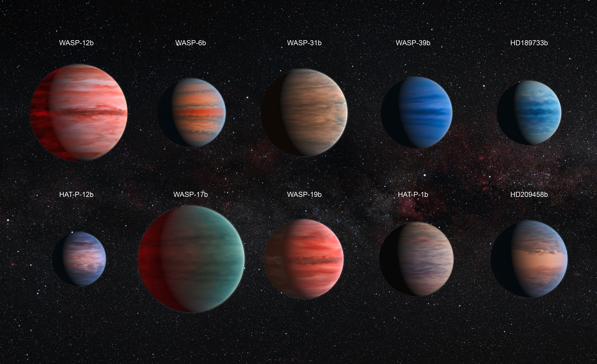
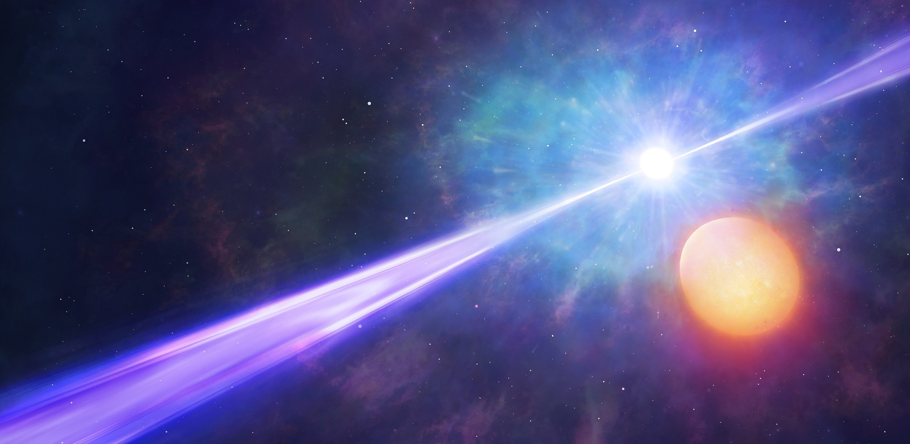
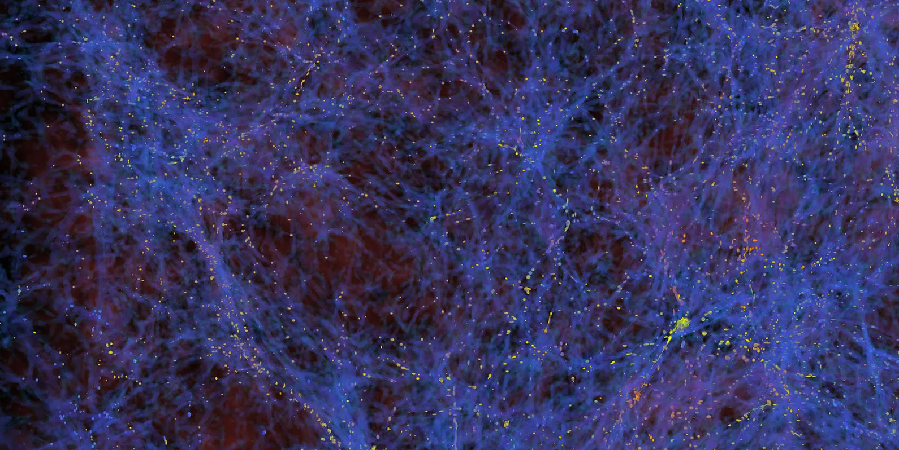

Descobrindo os Mistérios do Cosmos
Descubra os mistérios do cosmos em uma jornada emocionante de exploração cósmica. Dos buracos negros aos planetas exóticos, o universo está repleto de maravilhas esperando para serem descobertas. Junte-se a nós nesta viagem onde cada nova observação nos aproxima um pouco mais da compreensão do cosmos. Prepare-se para explorar o desconhecido e desvendar os segredos das estrelas.
Planetas Estranhos
Existem muitos planetas estranhos e fascinantes que foram descobertos fora do nosso sistema solar, chamados Exoplanetas. Alguns desses planetas têm características extremas, como temperaturas absurdamente altas ou baixas, atmosferas incomuns e órbitas peculiares. Desde a primeira descoberta confirmada em 1992, os exoplanetas se tornaram uma área vibrante de pesquisa na astronomia, revelando uma diversidade incrível de mundos além do nosso próprio sistema estelar.
Estes são apenas alguns exemplos de Exoplanetas conhecidos.
Explosão Cósmica Mais Brilhante
A explosão cósmica GRB 050904 é uma das mais poderosas já registradas pelos astrônomos. GRB significa "Gamma-Ray Burst" (Explosão de Raios Gama, em português) e refere-se a uma explosão extremamente energética de raios gama, que é a forma mais energética de luz. Essas explosões podem durar apenas alguns segundos, mas durante esse curto período de tempo, liberam uma quantidade extraordinária de energia.
Um evento cósmico singular, é um lembrete impressionante da incrível energia presente no cosmos.
Grande Muralha de Galáxias
A Grande Muralha de Galáxias é uma vasta estrutura cósmica composta por aglomerados de galáxias, filamentos cósmicos e vazios. Foi descoberta na década de 1980 por uma equipe liderada por Margaret Geller e John Huchra durante o "Survey de Redshift de Las Campanas", revelando a impressionante organização do universo em grande escala. Esta descoberta revolucionou nossa compreensão da distribuição de matéria no cosmos.
Uma maravilha cósmica de proporções incomparáveis que ilustra a vastidão e complexidade do universo.
Três Marias
As Três Marias, também conhecidas como o Cinturão de Órion, são formadas pelas estrelas Alnitak, Alnilam e Mintaka, as mais brilhantes da constelação de Orion. Apesar de parecerem alinhadas, estão a diferentes distâncias da Terra: Alnitak está a cerca de 800 anos-luz, Alnilam a aproximadamente 1.340 anos-luz, e Mintaka a cerca de 915 anos-luz. Essas estrelas têm sido pontos de referência históricos para navegação e calendários agrícolas.
Um espetáculo celeste marcante e reconhecível que continua a encantar observadores do céu noturno.
Espero que essas curiosidades despertem ainda mais o seu interesse pelo cosmos e inspirem a sua busca por conhecimento sobre o universo.